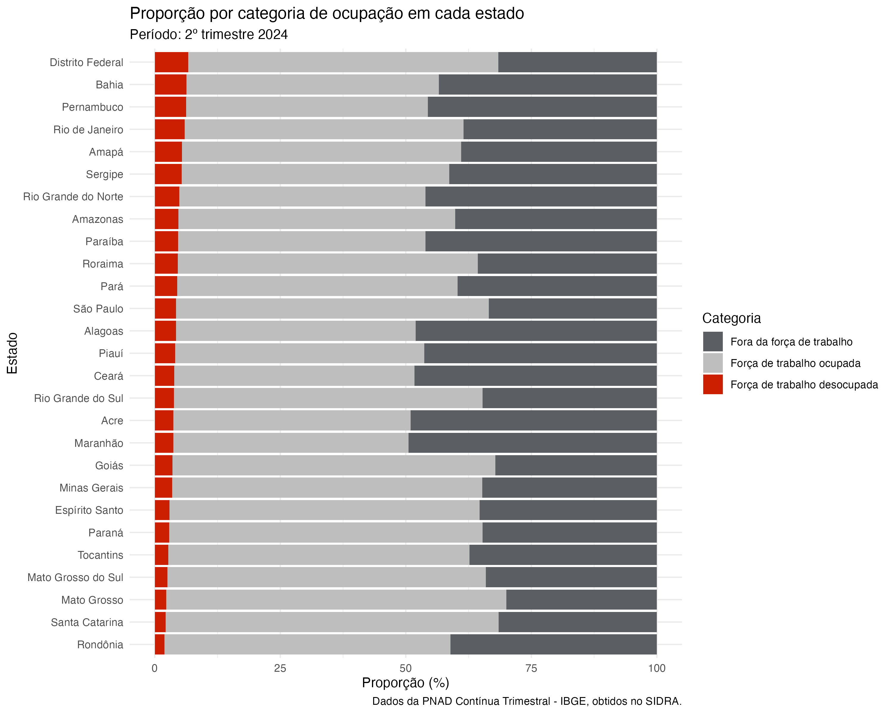
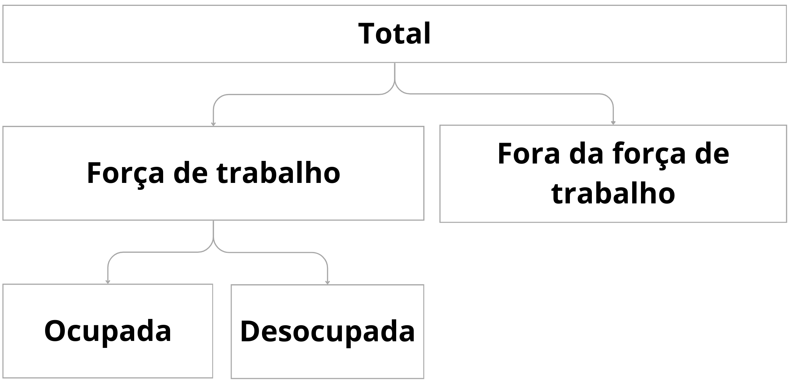
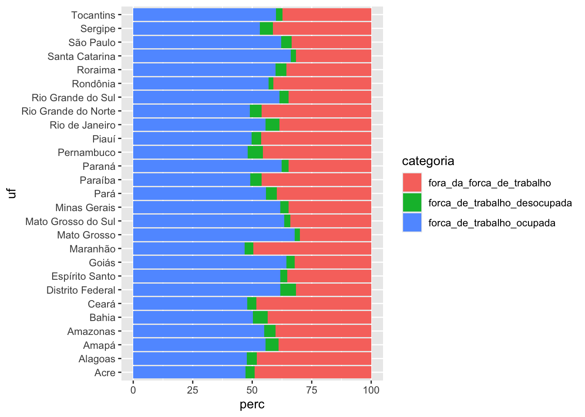
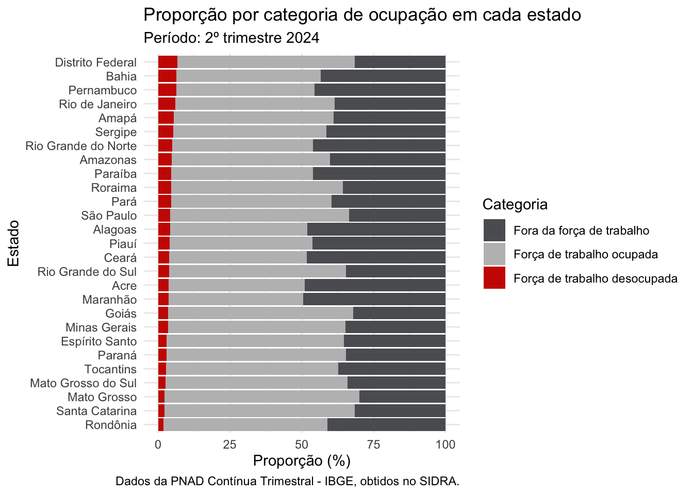

library(ggplot2)
library(dplyr)- 1
- Pacote para visualização de dados
- 2
- Pacote para transformação de dados
Gráfico de colunas com proporção de pessoas por categoria de ocupação em cada estado
Nesse exemplo, o objetivo é criar um gráfico de colunas para visualizar a proporção de pessoas por categoria de ocupação para cada estado, em um trimestre específico (nesse caso, utilizaremos os dados do trimestre mais recente)
Para isso, precisamos calcular a proporção de pessoas por categoria de ocupação, em cada estado. Depois, representaremos esses valores em um gráfico de colunas.
Esse é o gráfico que queremos criar:

library(ggplot2)
library(dplyr)Caso não tenha o arquivo da tabela que utilizaremos, você pode baixar aqui, e copiar o arquivo para a pasta dados_output do seu projeto.
Outra opção é executar o código abaixo:
download.file(
url = "https://github.com/ipeadata-lab/curso_r_intro_202409/raw/refs/heads/main/dados_output/sidra_4092_arrumado.rds",
destfile = "dados_output/sidra_4092_arrumado.rds",
mode = "wb"
)dados <- readr::read_rds("dados_output/sidra_4092_arrumado.rds")
dados_tri_recente <- dados |>
filter(trimestre_inicio == max(trimestre_inicio))É importante entender as categorias de ocupação que temos disponíveis na base de dados, se não podemos correr o risco de contar valores mais de uma vez:

Portanto, para obter o total, precisaremos apenas das seguinte categorias de ocupação:
mil_pessoas_forca_de_trabalho_ocupada: Pessoas dentro da força de trabalho, que estão ocupadas.
mil_pessoas_forca_de_trabalho_desocupada: Pessoas dentro da força de trabalho, que estão desocupadas.
mil_pessoas_fora_da_forca_de_trabalho: Pessoas fora da força de trabalho.
Primeiro, vamos selecionar as colunas que utilizaremos para esse gráfico, para facilitar a preparação dos dados:
dados_selecionados <- dados_tri_recente |>
select(
regiao,
uf,
trimestre,
mil_pessoas_forca_de_trabalho_ocupada,
mil_pessoas_forca_de_trabalho_desocupada,
mil_pessoas_fora_da_forca_de_trabalho,
)
head(dados_selecionados)# A tibble: 6 × 6
regiao uf trimestre mil_pessoas_forca_de…¹ mil_pessoas_forca_de…²
<chr> <chr> <chr> <dbl> <dbl>
1 Nordeste Pernambu… 2º trime… 3774 492
2 Nordeste Bahia 2º trime… 6159 769
3 Centro Oeste Distrito… 2º trime… 1613 174
4 Sudeste Rio de J… 2º trime… 8226 878
5 Nordeste Sergipe 2º trime… 1016 102
6 Nordeste Rio Gran… 2º trime… 1441 144
# ℹ abbreviated names: ¹mil_pessoas_forca_de_trabalho_ocupada,
# ²mil_pessoas_forca_de_trabalho_desocupada
# ℹ 1 more variable: mil_pessoas_fora_da_forca_de_trabalho <dbl>Para calcular a proporção de pessoas por categoria de ocupação em cada estado, precisamos usar os valores que estão nas colunas mil_pessoas_forca_de_trabalho_ocupada, mil_pessoas_forca_de_trabalho_desocupada e mil_pessoas_fora_da_forca_de_trabalho. Porém, para fazer isso, precisamos transformar a tabela em formato longo.
Vamos transformar a tabela em formato longo, utilizando a função pivot_longer():
dados_longos <- dados_selecionados |>
tidyr::pivot_longer(
cols = tidyselect::starts_with("mil_pessoas"),
names_to = "categoria",
values_to = "mil_pessoas",
names_prefix = "mil_pessoas_"
)
head(dados_longos)# A tibble: 6 × 5
regiao uf trimestre categoria mil_pessoas
<chr> <chr> <chr> <chr> <dbl>
1 Nordeste Pernambuco 2º trimestre 2024 forca_de_trabalho_ocupada 3774
2 Nordeste Pernambuco 2º trimestre 2024 forca_de_trabalho_desocupada 492
3 Nordeste Pernambuco 2º trimestre 2024 fora_da_forca_de_trabalho 3574
4 Nordeste Bahia 2º trimestre 2024 forca_de_trabalho_ocupada 6159
5 Nordeste Bahia 2º trimestre 2024 forca_de_trabalho_desocupada 769
6 Nordeste Bahia 2º trimestre 2024 fora_da_forca_de_trabalho 5314Agora, podemos calcular a proporção de pessoas por categoria de ocupação em cada estado:
dados_preparados <- dados_longos |>
group_by(regiao, uf, trimestre) |>
mutate(perc = mil_pessoas / sum(mil_pessoas) * 100) |>
ungroup()
head(dados_preparados)# A tibble: 6 × 6
regiao uf trimestre categoria mil_pessoas perc
<chr> <chr> <chr> <chr> <dbl> <dbl>
1 Nordeste Pernambuco 2º trimestre 2024 forca_de_trabalho_ocu… 3774 48.1
2 Nordeste Pernambuco 2º trimestre 2024 forca_de_trabalho_des… 492 6.28
3 Nordeste Pernambuco 2º trimestre 2024 fora_da_forca_de_trab… 3574 45.6
4 Nordeste Bahia 2º trimestre 2024 forca_de_trabalho_ocu… 6159 50.3
5 Nordeste Bahia 2º trimestre 2024 forca_de_trabalho_des… 769 6.28
6 Nordeste Bahia 2º trimestre 2024 fora_da_forca_de_trab… 5314 43.4 Com os dados preparados, podemos criar o gráfico de colunas. Vamos primeiro criar um gráfico simples:
dados_preparados |>
ggplot() +
aes(y = uf, x = perc) +
geom_col(aes(fill = categoria))
trimestre_referencia <- unique(dados_preparados$trimestre)
grafico_prop <- dados_preparados |>
mutate(
categoria_label = case_match(
categoria,
"forca_de_trabalho_ocupada" ~ "Força de trabalho ocupada",
"forca_de_trabalho_desocupada" ~ "Força de trabalho desocupada",
"fora_da_forca_de_trabalho" ~ "Fora da força de trabalho"
),
categoria_fct = factor(
categoria_label,
levels = c(
"Fora da força de trabalho",
"Força de trabalho ocupada",
"Força de trabalho desocupada"
)),
uf_fct = forcats::fct_reorder(uf, perc, min)
) |>
ggplot() +
aes(y = uf_fct, x = perc) +
geom_col(aes(fill = categoria_fct)) +
scale_fill_manual(values = c( "#5b5e62", "gray", "#cc1e00")) +
labs(
x = "Proporção (%)",
y = "Estado",
title = "Proporção por categoria de ocupação em cada estado",
subtitle = paste0("Período: ", trimestre_referencia),
fill = "Categoria",
caption = "Dados da PNAD Contínua Trimestral - IBGE, obtidos no SIDRA."
) +
theme_minimal()
grafico_propcase_math() (similar ao case_when()), criamos uma nova coluna com os nomes das categorias de ocupação por extenso.

Podemos salvar o gráfico em um arquivo, para utilizá-lo posteriormente:
ggsave(
filename = "graficos/grafico_proporcao_categoria_ocupacao.png",
plot = grafico_prop,
width = 10,
height = 8,
dpi = 300
)